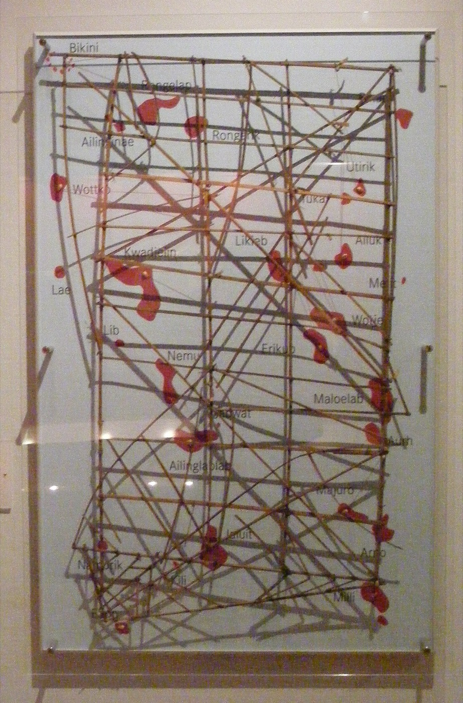

M
Historical maps, kept as drawn —
connected to the world.
- Nayuta, Inc.Geospatial software, Japan
- MaplatSince 2016 · open source, Apache 2.0
- MaplatEditor 1.0Released 2026 · no programming needed

This is a map.
It shows almost no positions.
Kyoto, 1696
The same ground today
Keep the drawing.
Connect it anyway.
Street crosses triangle edges
Street pinned as a triangle edge
Every map is a projection.
MaplatCore Pro · in development
Towards 2027
- Coordinate systems — projections — in our next map data format
- IIIF images and manifests as first-class sources
- Vector data on old maps, and a hosted MaplatEditor
- An MCP interface so AI tools can drive Maplat
- Open problem: carrying all of this into 3D
Keep the drawing. Connect it anyway.
maplat.jpgithub.com/code4history/Maplat